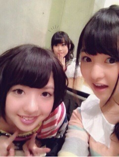

| 2013/04 02 Tue | 397回目*marika |
＼袴！袴！／
愛おしいねねの眉毛
さて、4月になりました。
高校3年生の伊藤万理華です。
エイプリルフールの存在
すっかり忘れてました。
どうぞよろしく

昨日はドラマ撮影があり、
ナイツレディース3人組
クランクアップしました！
短い間でしたが、本当に
たくさんのことを学びました。
自分が思ってたようなことと
違ったり理解するのに
大変だったりしました。
上手くいかなくて悔しかった。
またやりたい！頑張りたい！
スタッフのみなさん
キャストのみなさん
ありがとうございました！
.........
月刊エンタメ
個人pvについて語らせて
いただきました

乃木坂と、まなぶ。
乃木坂Choiceに
私の気になるニュースと感想が
載っています
明日からさゆにゃん！
ぜひ見てください。
今日明日とOFFが続くので
体調ばっちしにしなきゃ。
いっぱい寝るつもりです。←

まあやといくちゃん

まりか
コメント(361)
2013/04/02 21:18